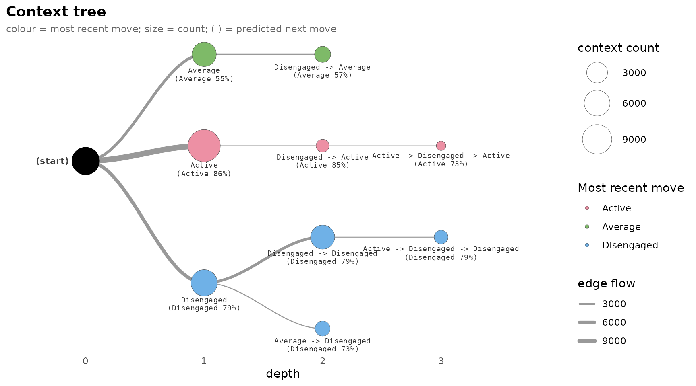

Variable-order transition trees
Written by Mohammed Saqr and Sonsoles López-Pernas
Source:vignettes/transitiontrees.Rmd
transitiontrees.RmdSequences of categorical states are among the most common records in the learning and behavioral sciences: the weekly engagement of a student, the moves of a group negotiating a task, the turns of a person working with an AI assistant. A first-order Markov chain summarizes such data by the probability of each next state given the current one. Its assumption is that memory has the same length everywhere. A higher-order chain relaxes the length but keeps it fixed, and the number of parameters grows geometrically with the order, so most of the longer histories are estimated from very few observations.
A variable-order Markov chain lets the length of the relevant history
depend on the history itself. After some states the next state is well
predicted by the current state alone; after others, one or two earlier
states change the prediction. The model is stored as a prediction suffix
tree (Ron, Singer, & Tishby, 1996): each node is a context, a short
run of recent states, and carries a distribution over the next state.
Contexts are kept only where the data support them, so the tree is deep
where history matters and shallow where it does not (Bühlmann &
Wyner, 1999; Gabadinho & Ritschard, 2016). The
transitiontrees package fits these trees, reports them as
tables of pathways, prunes them by likelihood-ratio tests or information
criteria, and uses them to predict, score and compare sequences.
The model
Let be a finite set of states (the alphabet) and a sequence over . A context of length is a run of consecutive states that precedes position . The model specifies, for each context in a set , a next-state distribution
The set
is closed under suffixes: if a context is in the tree, so is every
shorter run obtained by dropping its oldest states. It therefore forms a
tree whose root is the empty context, written (start), and
in which each child extends its parent by one state further into the
past.
The longest-suffix rule. To predict from the history , the model uses the longest suffix of the history that is a context in the tree,
A first-order chain is the special case in which holds the root and every single state; a fixed -th order chain holds every context up to length .
Estimation. Let
be the number of times context
is followed by state
in the data and
.
A context receives its own node when it is no longer than
max_depth and
min_count. Its maximum likelihood distribution is
.
Smoothing. A state never observed after would receive probability zero, and one such event in new data would make the likelihood zero. The default floor smoother leaves a fully observed distribution unchanged and otherwise shifts it toward the uniform distribution,
so that each unobserved state receives exactly
(default 0.001). Laplace, Kneser-Ney, Witten-Bell and Jelinek-Mercer
smoothers are available through smoothing =.
Pruning. Let be the parent of , the context with the oldest state removed. A leaf is kept when its counts differ from the prediction of its parent by more than chance. The likelihood-ratio statistic
is compared with the
quantile of a
distribution with
degrees of freedom; leaves that fail are removed, and the test is
repeated on the new leaves until every leaf passes. The AIC
and BIC criteria keep a leaf when its log likelihood,
penalized by
or
,
exceeds that of its parent’s prediction.
Fit. The log likelihood of the data is , with free parameters. Perplexity, for predicted states, is the effective number of equally likely next states: it equals for a uniform guess and 1 for perfect prediction.
Divergence. The pathway tables report, for each context, the Kullback-Leibler divergence in bits of its next-state distribution from its parent’s, . A large divergence marks a history that changes the prediction made from the shorter history.
Data
engagement holds the weekly engagement states of 1,000
students, one student per row and one week per column (T1
to T25).
- Sequence: each row is one student’s trajectory, read from left to right.
-
States:
Active,AverageandDisengaged. -
Missing cells:
NAmarks weeks after a student’s record ends; such cells are dropped, not treated as a state.
library(transitiontrees)
head(engagement, 3)
#> T1 T2 T3 T4 T5 T6 T7 T8 T9 T10 T11
#> 1 Average Active Active Active Active Active Active Active Active Active Active
#> 2 Average Active Active Active Active Active Active Active Active Active Active
#> 3 Active Active Active Active Active Active Average Active Active Active Active
#> T12 T13 T14 T15 T16 T17 T18 T19
#> 1 Active Average Average Active Active Active Disengaged Disengaged
#> 2 Active Average Average Active Average Active Active Active
#> 3 Disengaged Disengaged Disengaged Disengaged Disengaged Disengaged Disengaged Disengaged
#> T20 T21 T22 T23 T24 T25
#> 1 Disengaged Active Active Active <NA> <NA>
#> 2 Active Active Disengaged Disengaged <NA> <NA>
#> 3 Average Average Disengaged Disengaged Average <NA>Fitting a tree
context_tree() takes a wide data frame or matrix, a list
of character vectors, or a long event log. The tree below allows
histories of up to three weeks and gives a context its own node when it
occurs at least ten times.
tree <- context_tree(engagement, max_depth = 3, min_count = 10)
tree
#> <transitiontrees> 40 nodes, depth <= 3, 3 states [unpruned]
#> alphabet : Active, Average, Disengaged
#> fit on : 1000 sequences, 24555 observations
#> smoothing: floor(ymin=0.001, rule=interpolate) min_count = 10
#> (start) n=24555 -> Active (0.51)
#> |-- Active n=11894 -> Active (0.86)
#> | |-- Active n=9766 -> Active (0.86)
#> | | |-- Active n=7994 -> Active (0.86)
#> | | |-- Average n=1215 -> Active (0.85)
#> | | `-- Disengaged n=256 -> Active (0.86)
#> | |-- Average n=1473 -> Active (0.86)
#> | | |-- Active n=296 -> Active (0.86)
#> | | |-- Average n=781 -> Active (0.85)
#> | | `-- Disengaged n=316 -> Active (0.87)
#> | `-- Disengaged n=312 -> Active (0.85)
#> | |-- Active n=22 -> Active (0.73)
#> | |-- Average n=37 -> Active (0.84)
#> | `-- Disengaged n=238 -> Active (0.86)
#> |-- Average n=5063 -> Average (0.55)
#> | |-- Active n=1031 -> Average (0.54)
#> | | |-- Active n=859 -> Average (0.54)
#> | | |-- Average n=118 -> Average (0.53)
#> | | `-- Disengaged n=29 -> Average (0.59)
#> | |-- Average n=2670 -> Average (0.54)
#> | | |-- Active n=520 -> Average (0.54)
#> | | |-- Average n=1394 -> Average (0.53)
#> | | `-- Disengaged n=567 -> Average (0.54)
#> | `-- Disengaged n=1043 -> Average (0.57)
#> | |-- Active n=79 -> Average (0.66)
#> | |-- Average n=140 -> Average (0.59)
#> ... 14 more nodes (use as.data.frame(x) or summary(x))The banner reports 40 nodes over 1,000 sequences and 24,555 observed
states. Each line of the tree is a context with its count and its most
likely next state. Children extend their parent into the past: the line
Disengaged indented under Active is the
context Disengaged -> Active, a disengaged week followed
by an active one. The root line is the marginal distribution, the
prediction made with no history: Active with probability
0.51.
state_frequencies() gives the shares of the three
states.
state_frequencies(tree)
#> state count proportion
#> 1 Active 12426 0.506
#> 2 Disengaged 6873 0.280
#> 3 Average 5256 0.214Half of all observed weeks are Active, 28%
Disengaged and 21% Average.
Reading the tree
summary() returns the pathway table, one row per
context, sorted by count; as.data.frame() returns the same
table for every node.
summary(tree)
#> <transitiontrees summary> 40 nodes, depth <= 3, 3 states [unpruned]
#>
#> pathway depth count likely_next next_probability divergence
#> (start) 0 24555 Active 0.506 NA
#> Active 1 11894 Active 0.859 4.18e-01
#> Disengaged 1 6598 Disengaged 0.786 9.45e-01
#> Average 1 5063 Average 0.548 3.84e-01
#> Active -> Active 2 9766 Active 0.859 4.12e-05
#> Disengaged -> Disengaged 2 4960 Disengaged 0.791 1.67e-04
#> Average -> Average 2 2670 Average 0.539 2.80e-04
#> Average -> Active 2 1473 Active 0.859 1.19e-03
#> Disengaged -> Average 2 1043 Average 0.566 5.88e-03
#> Active -> Average 2 1031 Average 0.539 1.11e-03
#> changes_prediction
#> NA
#> FALSE
#> TRUE
#> TRUE
#> FALSE
#> FALSE
#> FALSE
#> FALSE
#> FALSE
#> FALSE
#> # ... 30 more rows (use as.data.frame(tree) for the full table)Each row is a pathway, written oldest state first,
so Average -> Disengaged is an average week followed by
a disengaged one. likely_next and
next_probability give the modal next state and its
probability, divergence is
in bits, and changes_prediction flags a context whose modal
next state differs from its parent’s.
tree_pathways() returns the full table with a choice of
sort order, and three verbs fix the sorts used most often.
common_pathways() ranks by count:
common_pathways(tree, top = 5)
#> pathway depth count likely_next next_probability divergence
#> 1 (start) 0 24555 Active 0.506 NA
#> 2 Active 1 11894 Active 0.859 4.18e-01
#> 3 Active -> Active 2 9766 Active 0.859 4.12e-05
#> 4 Active -> Active -> Active 3 7994 Active 0.861 2.52e-05
#> 5 Disengaged 1 6598 Disengaged 0.786 9.45e-01
#> changes_prediction
#> 1 NA
#> 2 FALSE
#> 3 FALSE
#> 4 FALSE
#> 5 TRUEdivergent_pathways() ranks by divergence from the
shorter history. A min_count of 50 keeps contexts with
enough support to be read.
divergent_pathways(tree, top = 6, min_count = 50)
#> pathway depth count likely_next next_probability divergence
#> 1 Disengaged 1 6598 Disengaged 0.786 0.9453
#> 2 Active 1 11894 Active 0.859 0.4183
#> 3 Average 1 5063 Average 0.548 0.3836
#> 4 Average -> Active -> Disengaged 3 82 Disengaged 0.902 0.0445
#> 5 Active -> Disengaged -> Average 3 79 Average 0.658 0.0284
#> 6 Active -> Disengaged -> Disengaged 3 449 Disengaged 0.788 0.0113
#> changes_prediction
#> 1 TRUE
#> 2 FALSE
#> 3 TRUE
#> 4 FALSE
#> 5 FALSE
#> 6 FALSEThe single states diverge most from the root, and two of them
redirect the prediction: after a Disengaged week the most
likely next week is Disengaged (0.786), and after an
Average week it is Average (0.548), whereas
the marginal prediction is Active. Beyond one week the
divergences are an order of magnitude smaller; the largest,
Average -> Active -> Disengaged (82 occurrences,
0.0445 bits), raises the probability of staying disengaged to 0.902.
sharp_pathways() ranks by the probability of the modal
next state, the contexts after which the next state is most
predictable.
sharp_pathways(tree, top = 5, min_count = 50)
#> pathway depth count likely_next next_probability divergence
#> 1 Average -> Active -> Disengaged 3 82 Disengaged 0.902 0.044479
#> 2 Disengaged -> Average -> Active 3 316 Active 0.867 0.001010
#> 3 Active -> Average -> Active 3 296 Active 0.865 0.000823
#> 4 Disengaged -> Active -> Active 3 256 Active 0.863 0.002628
#> 5 Disengaged -> Disengaged -> Active 3 238 Active 0.861 0.001022
#> changes_prediction
#> 1 FALSE
#> 2 FALSE
#> 3 FALSE
#> 4 FALSE
#> 5 FALSEEach of the sharpest contexts ends in a state that tends to repeat.
Average -> Active -> Disengaged is followed by
another disengaged week with probability 0.902, and four three-week
histories ending in Active are followed by
Active with probabilities between 0.861 and 0.867.
Pruning
Most of the grown contexts may predict no better than their parents.
prune_tree() removes leaves that fail the
test at
.
pruned <- prune_tree(tree, criterion = "G2", alpha = 0.05)
pruned
#> <transitiontrees> 10 nodes, depth <= 3, 3 states [pruned]
#> alphabet : Active, Average, Disengaged
#> fit on : 1000 sequences, 24555 observations
#> smoothing: floor(ymin=0.001, rule=interpolate) min_count = 10
#> pruned by: G2 alpha = 0.05
#> (start) n=24555 -> Active (0.51)
#> |-- Active n=11894 -> Active (0.86)
#> | `-- Disengaged n=312 -> Active (0.85)
#> | `-- Active n=22 -> Active (0.73)
#> |-- Average n=5063 -> Average (0.55)
#> | `-- Disengaged n=1043 -> Average (0.57)
#> `-- Disengaged n=6598 -> Disengaged (0.79)
#> |-- Average n=719 -> Disengaged (0.73)
#> `-- Disengaged n=4960 -> Disengaged (0.79)
#> `-- Active n=449 -> Disengaged (0.79)The test keeps 10 of the 40 nodes. The surviving structure is mostly
first order. The longer histories that remain all involve disengagement:
an Average week before a disengaged one lowers the
probability of staying disengaged (0.734 against 0.786), and the history
Active -> Disengaged -> Disengaged is kept as
well.
plot() draws the tree from the root on the left. Node
size is the context count, edge width the number of observations flowing
into the child, node color the most recent state of the pathway, and the
label under each node the modal next state with its probability.
plot(pruned)
compare_pruning() applies each criterion to the same
tree and reports how many nodes it keeps.
compare_pruning(tree)
#> criterion n_nodes reduction_pct
#> 1 G2 10 75.0
#> 2 KL 19 52.5
#> 3 AIC 12 70.0
#> 4 BIC 6 85.0BIC, whose penalty grows with the context count, is the strictest (6 nodes); the KL threshold is the most lenient (19 nodes); and AIC lie between. The smoothing and pruning guide compares the criteria and smoothers in detail.
Fit
model_fit() returns the log likelihood, degrees of
freedom, number of predicted states, AIC, BIC and perplexity in one
row.
model_fit(tree)
#> logLik df nobs AIC BIC perplexity
#> 1 -16163 80 24555 32486 33134 1.93
model_fit(pruned)
#> logLik df nobs AIC BIC perplexity
#> 1 -16181 20 24555 32403 32565 1.93Pruning lowers the log likelihood only slightly (from -16,163 to -16,181) while reducing the parameters from 80 to 20, so both AIC (32,486 to 32,403) and BIC (33,134 to 32,565) favor the pruned tree. The perplexity of both trees is 1.93: knowing the recent weeks reduces the three possible next states to about two equally likely ones. These values are computed on the fitting data. Out-of-sample perplexity by cross-validation is the subject of the model selection guide.
Prediction
predict() applies the longest-suffix rule to new
histories. With tidy = TRUE it returns one row per history:
the context used, the predicted state, its probability, and the full
distribution.
histories <- list(c("Active", "Average"),
c("Average", "Disengaged"),
c("Disengaged", "Active", "Disengaged"))
predict(pruned, newdata = histories, tidy = TRUE)
#> id history context predicted probability
#> 1 1 Active -> Average Average Average 0.548
#> 2 2 Average -> Disengaged Average -> Disengaged Disengaged 0.734
#> 3 3 Disengaged -> Active -> Disengaged Disengaged Disengaged 0.786
#> Active Average Disengaged
#> 1 0.3052 0.548 0.147
#> 2 0.0556 0.210 0.734
#> 3 0.0485 0.166 0.786The first history ends in Average, and no longer context
ending in Average survived pruning, so the prediction is
made from Average alone. The second history is itself a
context. The third has no matching two- or three-week context, so the
model falls back to Disengaged and predicts another
disengaged week with probability 0.786.
Further reading
The guides and case studies on the package website continue from here:
- Comparing groups: fitting one tree per group and testing where the groups differ.
- A complete workflow: every step of an analysis on one dataset.
- Data input: wide sequences, event logs and network objects.
- Smoothing and pruning.
- Model selection: tuning, fit and perplexity.
- Pathway reliability with the bootstrap.
- Prediction, scoring, imputation and mining.
- Visualizing transition trees.
- Verification against the PST package.
- Case studies: collaborative regulation by achievement, engagement trajectories and human-AI collaboration.
Assumptions
- The sequences are independent of one another, and the process is the same at every position (stationarity).
- The next state depends on the past only through its longest context in the tree.
-
max_depthandmin_countbound which contexts can be represented; contexts rarer thanmin_countare absorbed into their parent. - The pruning test is applied per leaf without correction for multiple testing.
References
Bühlmann, P., & Wyner, A. J. (1999). Variable length Markov chains. The Annals of Statistics, 27(2), 480–513. https://doi.org/10.1214/aos/1018031204
Gabadinho, A., & Ritschard, G. (2016). Analyzing state sequences with probabilistic suffix trees: The PST R package. Journal of Statistical Software, 72(3). https://doi.org/10.18637/jss.v072.i03
Ron, D., Singer, Y., & Tishby, N. (1996). The power of amnesia: Learning probabilistic automata with variable memory length. Machine Learning, 25(2–3), 117–149. https://doi.org/10.1023/A:1026490906255